Clause de non-responsabilité
Veuillez lire attentivement ce manuel avant d’utiliser Carvera. Ne pas le lire peut entraîner des blessures, des résultats médiocres ou endommager les produits Carvera.
Ce manuel est fourni à titre indicatif uniquement. Nous nous réservons le droit de le modifier ou de le réviser; les utilisateurs peuvent télécharger la version la plus récente sur notre site web.
Carvera est équipée de plusieurs capteurs (capteur de calage moteur, capteur d’anomalie de broche, etc.). Vous devez toutefois toujours rester attentif : les fraises tournant à grande vitesse, les composants instables et le laser en fonctionnement sont dangereux sans protection. Lisez attentivement les consignes de sécurité ci-dessous pour éviter les accidents inutiles.
Consignes de sécurité
1. Portez toujours des lunettes de sécurité lorsque vous utilisez Carvera, en particulier lorsque le capot de protection est ouvert.
2. Portez toujours des lunettes de protection laser lors de l’utilisation du laser.
3. Portez une protection auditive lorsque Carvera usine des matériaux durs.
4. Ne placez pas vos mains près de la broche ou de la zone d’usinage. Gardez le capot de protection fermé pendant l’utilisation de Carvera.
5. Ne laissez pas Carvera sans surveillance pendant l’usinage.
6. Faites attention au tranchant des fraises pendant l’installation, la collecte des poussières et les autres opérations.
7. Le fraisage et la gravure laser produisent de la chaleur. Des paramètres inadaptés peuvent provoquer un incendie. Gardez un extincteur à proximité.
8. Certains matériaux, comme la fibre de carbone et la résine époxy, sont dangereux lors de l’usinage ou de la gravure laser. Portez un masque et activez la collecte automatique des poussières.
9. N’exposez pas cette machine à la pluie ni à l’humidité.
10. Éloignez les enfants et les personnes présentes pendant l’utilisation. La surveillance et l’aide d’un adulte sont nécessaires lorsqu’un enfant utilise cette machine.
En cas d’urgence pendant l’usinage, par exemple si la pièce se détache, si des composants sont endommagés ou si la machine émet une lumière ou un son inhabituel, appuyez sur le bouton principal ou le bouton d’arrêt d’urgence (E-Stop) : toutes les opérations en cours s’arrêtent immédiatement. Vous pouvez aussi couper l’alimentation. Carvera utilise des servomoteurs en boucle fermée et enregistre les coordonnées et l’état à chaque étape. Il n’est donc pas nécessaire de recalibrer après un redémarrage ; relancez simplement le travail.
Carvera dispose d’une fonction de sécurité qui arrête automatiquement la machine lorsque le capot est ouvert, ce qui est utile dans les écoles ou les environnements où des enfants peuvent l’atteindre.
Conformité FCC
Cet équipement a été testé et déclaré conforme aux limites applicables aux appareils numériques de classe B, conformément à la partie 15 des règles de la FCC. Ces limites sont conçues pour fournir une protection raisonnable contre les interférences nuisibles dans une installation résidentielle. Cet équipement génère, utilise et peut émettre de l'énergie radiofréquence et, s'il n'est pas installé et utilisé conformément aux instructions, peut provoquer des interférences nuisibles aux communications radio. Toutefois, aucune garantie ne peut être donnée qu'aucune interférence ne se produira dans une installation particulière. Si cet équipement provoque des interférences nuisibles à la réception radio ou télévisuelle, ce qui peut être déterminé en éteignant puis en rallumant l'équipement, l'utilisateur est invité à essayer de corriger ces interférences par une ou plusieurs des mesures suivantes :
- Réorienter ou déplacer l'antenne de réception.
- Augmenter la distance entre l'équipement et le récepteur.
- Brancher l'équipement sur une prise d'un circuit différent de celui auquel le récepteur est connecté.
- Demander conseil au revendeur ou à un technicien radio/télévision expérimenté.
Attention : tout changement ou toute modification de cet appareil qui n'est pas explicitement approuvé par le fabricant peut annuler votre autorisation de l'utiliser.
Cet appareil est conforme à la partie 15 des règles de la FCC. Son fonctionnement est soumis aux deux conditions suivantes :
(1) Cet appareil ne doit pas provoquer d'interférences nuisibles et (2) il doit accepter toute interférence reçue, y compris celles susceptibles de provoquer un fonctionnement indésirable.
Cet équipement respecte les limites d'exposition aux rayonnements de la FCC établies pour un environnement non contrôlé. Il doit être installé et utilisé à une distance minimale de 20cm entre le radiateur et votre corps.
Conformité ISEDC
Cet appareil est conforme aux normes RSS exemptes de licence d'Innovation, Sciences et Développement économique Canada. Son fonctionnement est soumis aux deux conditions suivantes :
(1) Cet appareil ne doit pas provoquer d'interférences nuisibles et (2) il doit accepter toute interférence reçue, y compris celles susceptibles de provoquer un fonctionnement indésirable de l'appareil.
Le présent appareil est conforme aux CNR d'Innovation, Sciences et Développement économique Canada applicables aux appareils radio exempts de licence. L'exploitation est autorisée aux deux conditions suivantes : (1) l'appareil ne doit pas produire de brouillage et (2) l'utilisateur de l'appareil doit accepter tout brouillage radioélectrique subi, même si le brouillage est susceptible d'en compromettre le fonctionnement.
Cet appareil est conforme aux directives d'exposition aux radiofréquences; les utilisateurs peuvent obtenir les informations canadiennes relatives à l'exposition et à la conformité RF. La distance minimale entre le corps et l'appareil est de 20cm.
Le présent appareil est conforme. Après examen de ce matériel au regard des limites de conformité ou d'intensité de champ RF, les utilisateurs peuvent obtenir les informations correspondantes sur l'exposition aux radiofréquences et la conformité. La distance minimale entre le corps et l'appareil est de 20cm.
Étiquettes de sécurité
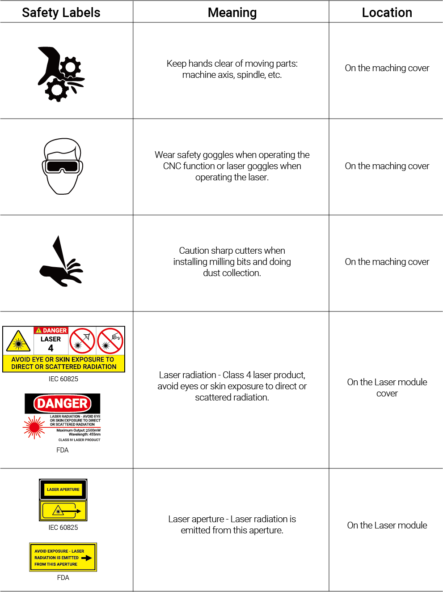
Déballage
Le poids de la caisse dépasse 70Kg/ 154lb. Le poids net de la fraiseuse CNC de bureau Carvera est d'environ 50Kg/110lb. Nous recommandons de déplacer cette machine à au moins deux personnes (avec des gants) afin de garantir la sécurité des personnes et de la machine. Veuillez vous assurer que votre bureau est suffisamment robuste et dispose d'un espace d'au moins 60 x 60 cm pour installer cette machine.
Déballage
1. Soulevez les attaches comme indiqué au bas de la caisse et ouvrez sa partie supérieure.
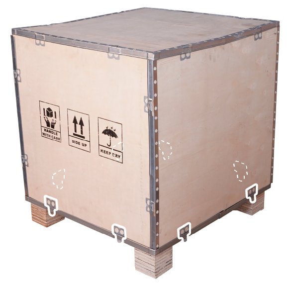
2. À deux personnes, placez la machine sur une surface solide, plane et horizontale. Laissez au moins 10 centimètres entre la machine et le mur afin qu'aucun obstacle ne gêne le capot de protection ou les prises.
3. Retirez le sac en plastique et les documents imprimés.
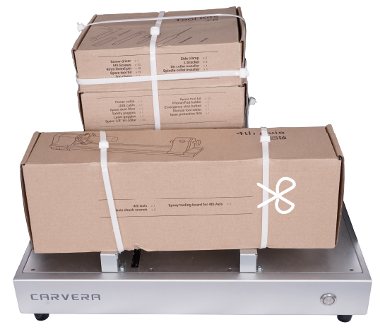
4. Coupez les serre-câbles et retirez les boîtes d'emballage situées à l'intérieur de la machine.
5. Retirez les structures de fixation aux positions A, B, C et D comme indiqué sur la figure, puis remettez 4 vis à tête fraisée (dans un sac en plastique) aux repères rouges des positions A, B et C.
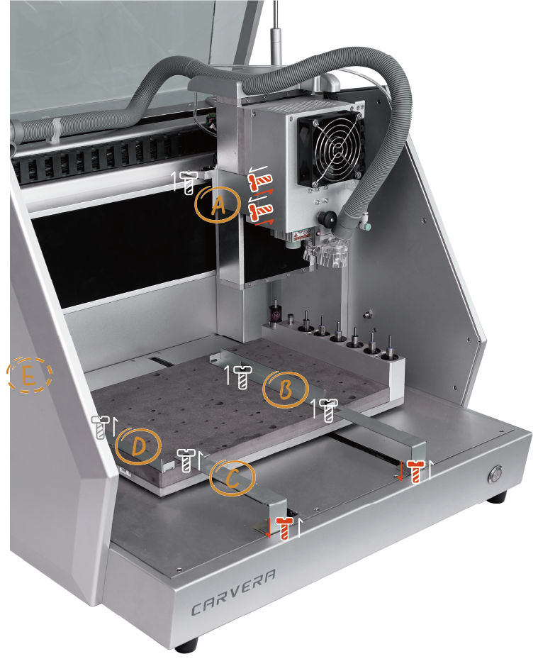
6. Retirez le ruban de protection en position E, qui sert à fixer le bac à poussière.
7. Tout est prêt ! Commençons !
Remarque : conservez la caisse en bois, la mousse, le sac plastique, les structures de fixation et les vis dans un endroit sûr pour une utilisation ultérieure.
Liste des pièces
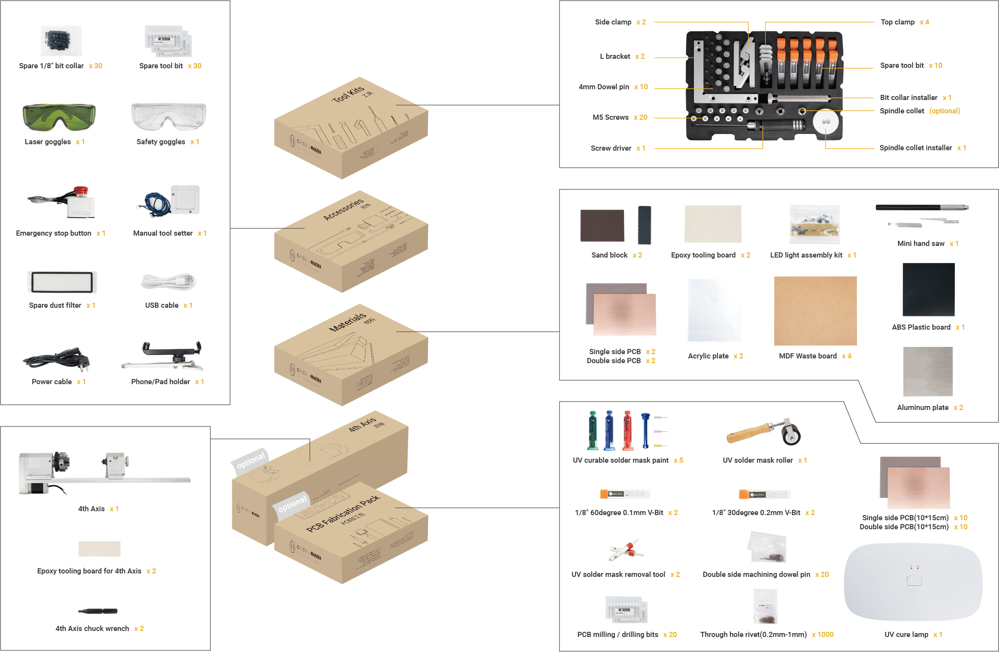
Préparation
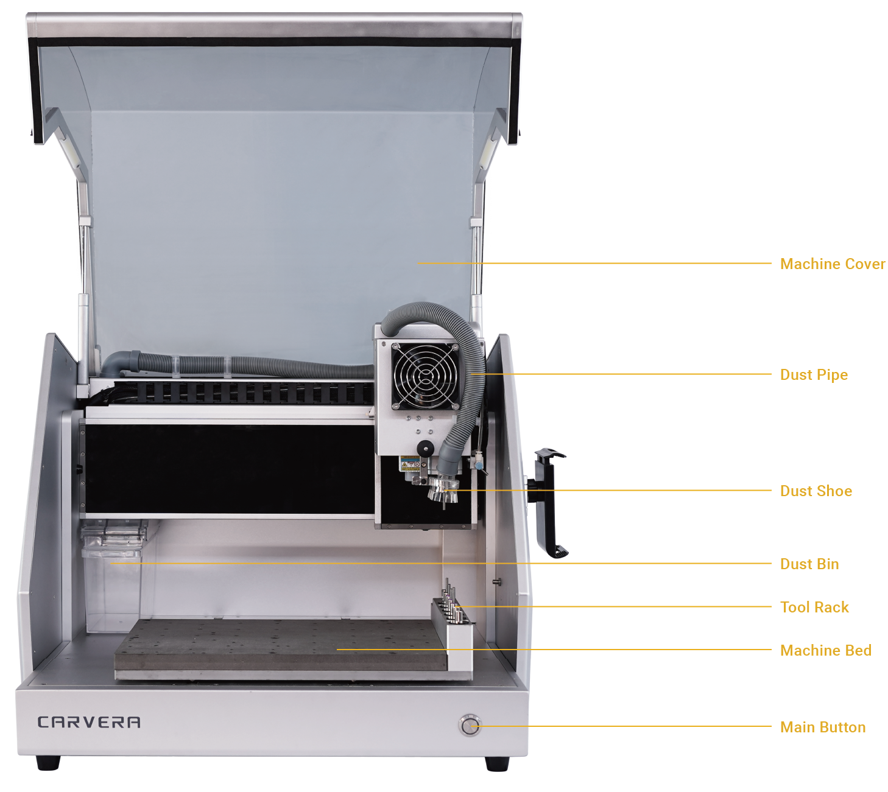
Mise sous tension
1. Branchez le câble d'alimentation et actionnez l'interrupteur.
2. La Carvera effectue automatiquement la prise d'origine des 3 axes et allume les éclairages de travail.
Préparation de l'outil
Pour faciliter le transport, les outils ne sont pas chargés par défaut. Placez le palpeur sans fil et les fraises dans les positions appropriées comme indiqué sur la figure. Le palpeur sans fil se trouve dans la boîte d'accessoires, les fraises dans la boîte à outils et l'outil optionnel de retrait du masque de soudure dans le pack PCB. L'outil installé par défaut est une tige de test (outil n°6).
Ces positions d'outils 1 à 6 sont destinées aux exemples. Si vous exécutez ultérieurement votre propre parcours d'outil, disposez vos outils en conséquence.
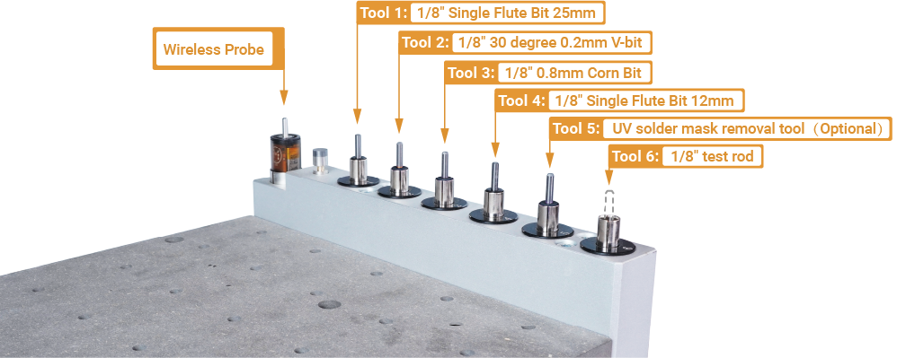
Installation du support de téléphone/tablette
Pour faciliter le transport, le support de téléphone/tablette n'est pas préinstallé. Pour l'installer, retirez les vis de sa base, placez le support et revissez-le. Veuillez noter que l'encoche doit être orientée dans le même sens que le port USB (chargement uniquement).
Pour votre confort, le support de téléphone/tablette peut être installé à droite ou à gauche de la machine. Par défaut, il est installé à droite.
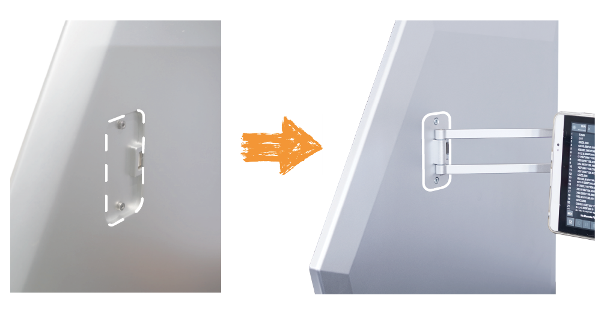
Régler la jupe d'aspiration
La jupe d'aspiration est verrouillée par défaut. Pour utiliser correctement le système d'aspiration, vous devez d'abord la déverrouiller. Tirez le bouchon vers l'extérieur et tournez-le d'environ 30 degrés ; vérifiez qu'il est déverrouillé afin que la jupe puisse coulisser librement vers le haut et vers le bas (les modes verrouillage et déverrouillage alternent tous les 30 degrés de rotation). Pour les autres instructions concernant le système d'aspiration, consultez le chapitre 6.
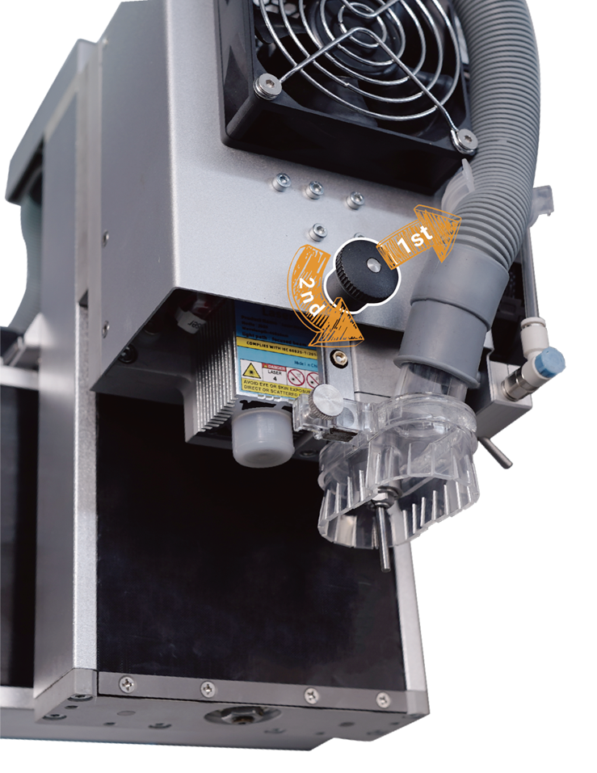
Charger le palpeur sans fil
Le palpeur sans fil est l'un des composants principaux de la Carvera. Il est indispensable pour le réglage de l'outil sur l'axe Z et la mise à niveau automatique. Chargez-le complètement avant sa première utilisation.
1. Une fois l'appareil allumé, le voyant jaune s'allume et le palpeur sans fil commence automatiquement à se charger.
2. Chargez le palpeur sans fil pendant au moins 30 minutes ou jusqu'à l'extinction du voyant jaune, qui indique que la charge est complète. Si la machine est utilisée fréquemment (au moins une fois par semaine), il n'est pas nécessaire de le charger à chaque fois.
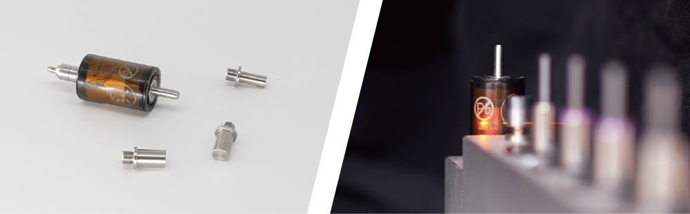
Installation du logiciel de commande
1. Rendez-vous sur www.makera.com, téléchargez et installez le logiciel de contrôle Carvera（il prend désormais en charge les ordinateurs/tablettes/téléphones sous Windows/Mac/Android ; la prise en charge d'IOS/Linux sera ajoutée ultérieurement）. Nous recommandons d'utiliser la version ordinateur du logiciel de contrôle lors de la première utilisation. Consultez le chapitre suivant pour les instructions relatives au logiciel.
2. Téléchargez et installez le pilote USB Carvera si vous prévoyez d'utiliser le mode de connexion USB.
Configuration WiFi (Recommandé)
La configuration du WIFI permet à la Carvera de rejoindre le réseau de votre lieu de travail afin que votre ordinateur puisse contrôler la machine sans restriction.
1. Le réseau peut être configuré au moyen d'un câble USB ou du point d'accès WiFi intégré à la machine.

2. Connexion via USB : branchez le câble USB et ouvrez le logiciel de contrôle Carvera. Cliquez sur le bouton d'état dans la barre d'état, puis sur « USB... » ; vous verrez votre périphérique USB et pourrez en choisir un pour vous connecter. Le bouton d'état sera alors mis à jour et indiquera que la machine est connectée en mode USB.
3. Connexion via le point d'accès : ouvrez les réglages WiFi de votre ordinateur, recherchez le point d'accès nommé CARVERA_WIFI_XXXXX et connectez-vous (aucun mot de passe). Une fois la connexion établie, ouvrez le logiciel de contrôle Carvera, cliquez sur le bouton d'état dans la barre d'état, puis sur « WIFI… » ; la Carvera recherchera automatiquement les appareils connectables. Actualisez la recherche si la Carvera ne trouve aucun appareil. Après la connexion à l'appareil, le bouton d'état sera mis à jour et indiquera que la machine est connectée en mode WiFi.
4. Configuration WiFi : cliquez sur le bouton « more » (à l'extrémité de la barre d'état) dans la barre d'état, puis sur l'icône WIFI ; le système commencera à rechercher les réseaux WIFI du lieu de travail. Sélectionnez un réseau WIFI, saisissez le mot de passe et connectez-vous. Réessayez si la connexion échoue.
5. Déconnexion : cliquez sur le bouton d'état, puis sur « Disconnect ». Revenez à votre WiFi.
6. Recommencez l'étape 3 à partir de « WIFI » pour connecter la Carvera en WIFI.
Tester le changeur d'outil automatique
Le changement d'outil automatique est l'une des fonctions clés de la Carvera et la base de toutes ses fonctions automatisées. Veuillez le tester lors de la première utilisation.
1. Ouvrez le logiciel de contrôle et connectez-vous à la Carvera.
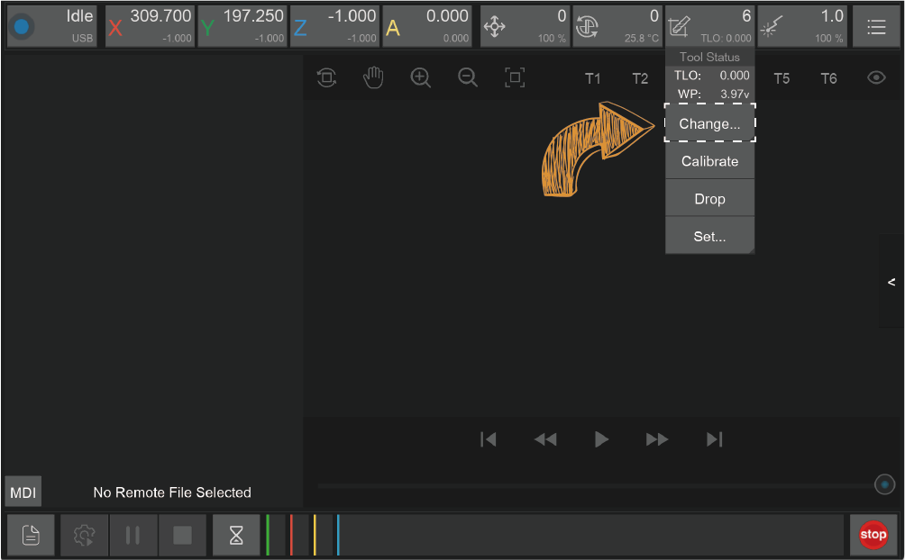
2. Passez à l'outil 1. L'outil préinstallé dans la machine est l'outil 6. Cliquez sur l'état de l'outil, cliquez sur « Change… », puis choisissez « Tool: 1 » ; le changement vers l'outil 1 s'effectue automatiquement. Observez la procédure pour vérifier qu'aucune erreur ne se produit.
3. Passez au palpeur sans fil. Si aucune erreur ne s'est produite, testez alors le palpeur sans fil. Cliquez sur l'état de l'outil, cliquez sur « Change », puis sélectionnez « Probe » ; le palpeur sans fil sera automatiquement installé et son signal vérifié. Observez la procédure pour vérifier qu'aucune erreur ne se produit.
4. Revenez à l'outil 1. Suivez l'étape 2.
Remarque : si vous décidez de ne pas utiliser la Carvera pendant une longue période, laissez un outil serré dans la broche, mais n'utilisez pas le palpeur sans fil. Laisser la pince d'outil sans outil pendant longtemps réduit son élasticité. Le palpeur sans fil ne peut pas se charger automatiquement s'il n'est pas dans le porte-outil.